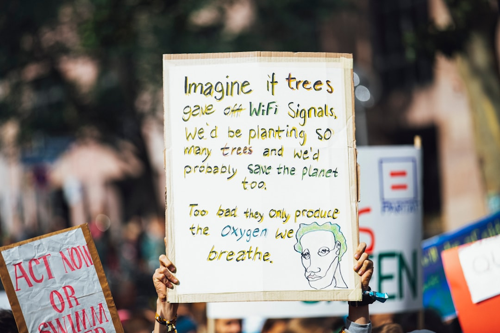

### The Corporate Takeover of AI: Whose Ethics Matter?
### The Corporate Takeover of AI: Whose Ethics Matter? In a world where capitalism reigns supreme, the ethics surrounding artificial intelligence (AI) slide into the dustbin of history, overshadowed by profit margins and corporate greed. The tech giants, those self-proclaimed harbingers of innovation, have turned AI into their playground, while we, the collective society, stand in the shadows, clueless and powerless. As the algorithms get smarter, our opportunities for privacy, equality, and even democracy dwindle. It’s time we race against the clock to reclaim our technology before it completely vanishes into the hands of the elite! Let's dissect the current narrative – AI ethics. The term itself sounds benevolent, doesn’t it? Brought to you by the same companies that lay off thousands of workers to maximize shareholder profits, creating software that manipulates public opinion and data that monitors our every move. Major corporations like Google and Facebook parade around wearing the garb of virtue with their AI ethics boards, which serve primarily as window dressing. These façades of morality are not designed to protect us; rather, they exist to avoid the backlash that comes with their increasingly aggressive data extraction methods. The tragedy lies in the fact that the most significant conversations about AI ethics are held in corporate boardrooms, led by executives whose primary interest is not in social welfare but in selling more ads. This phenomenon exhibits the very essence of capitalism: commodifying even our ethical considerations, distorting them until they no longer resemble the words they represent. With every report on “Ethics in Tech,” we see a single, resounding question arise: Who defines “ethical”? It certainly isn’t the working class, who are the first victims in this ruthless pursuit of profit. The implications are staggering. Algorithms created in the name of efficiency often translate to systemic oppression. Think about facial recognition technology, which has been shown to disproportionately misidentify people of color and women. When deployed by law enforcement, this technology becomes a tool of surveillance and discrimination, rather than the solution to crime it claims to be. And who profits? The companies behind such tech, who throw a few meager crumbs in the direction of social accountability while continuing to ride the wave of public complacency. AI’s potential for surveillance capital is perhaps its most chilling attribute. Society's anxiousness about Big Brother is being eclipsed by an insidious truth: we are willingly letting tech giants become massive data conglomerates, feeding on our digital footprints. As a result, AI-driven software learns not only to recommend products but to predict and shape our behavior. The true ethical conversation becomes about power dynamics: who controls the information, and consequently, who controls us? We need to confront the stark reality—AI is not neutral; it is imbued with the biases, prejudices, and capitalist motives of its creators. The same corporations preaching about diversity and inclusion are creating algorithms reflecting their flawed worldviews. Accountable to no one yet infinitely empowered, they perpetuate inequality through every line of code. And surprise, surprise! AI engineers do not often look like the communities being surveilled or profiled—they're predominantly white, male, and insulated in tech hubs, removed from the very problems they claim to solve. The urgency of genuine regulatory oversight rises daily, but regulatory bodies appear more interested in appeasing corporate lobbyists than safeguarding civil rights. Bills are introduced, arguments are had, but one thing remains quite clear: a government that bows to corporate interests is a government that betrays its populace. For the everyday citizen, the privacy they once took for granted has evaporated while we’ve stood idly by, disillusioned by the notion that such technology can be tamed. How do we resist? We organize. We fight for a society that puts people before profit, breaking down monolithic data empires. Social movements need to contend with this technological dystopia, engaging in proactive dialogue around what a just AI future looks like. The tech revolution cannot be in the hands of the few—or worse, the whims of the many who play to the highest bidder. When inclusive coalitions of workers and activists come together to challenge these monopolistic bastions, we can truly pry away tech's grip on society. Workers in the AI sector must unite, demanding transparency and ethics rooted in collective well-being rather
Updated 2025-08-03 06:54 UTC